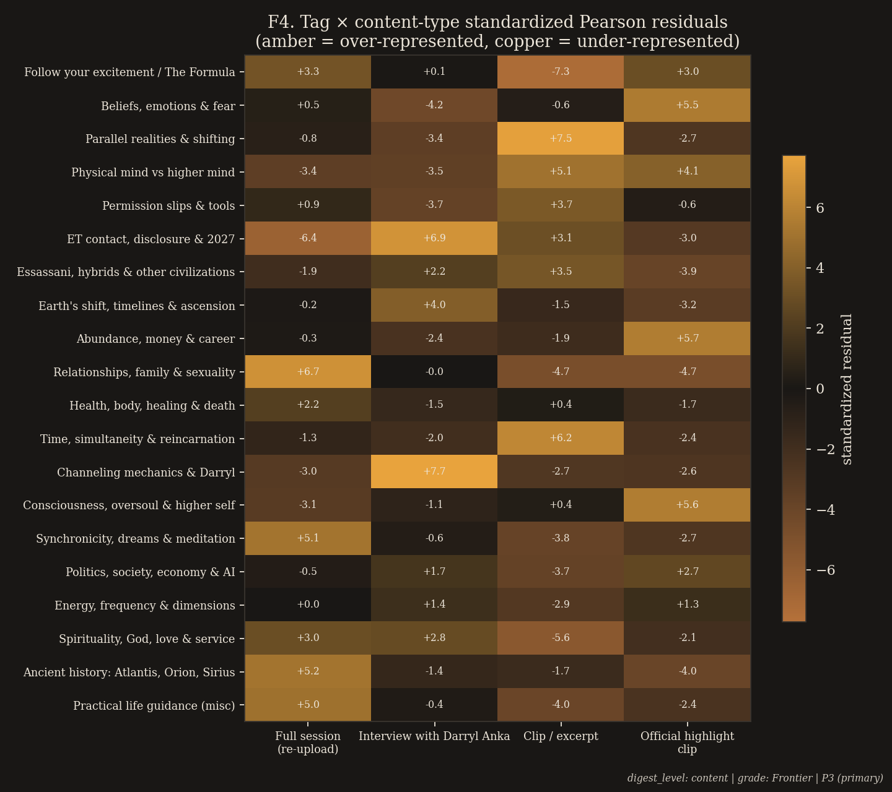
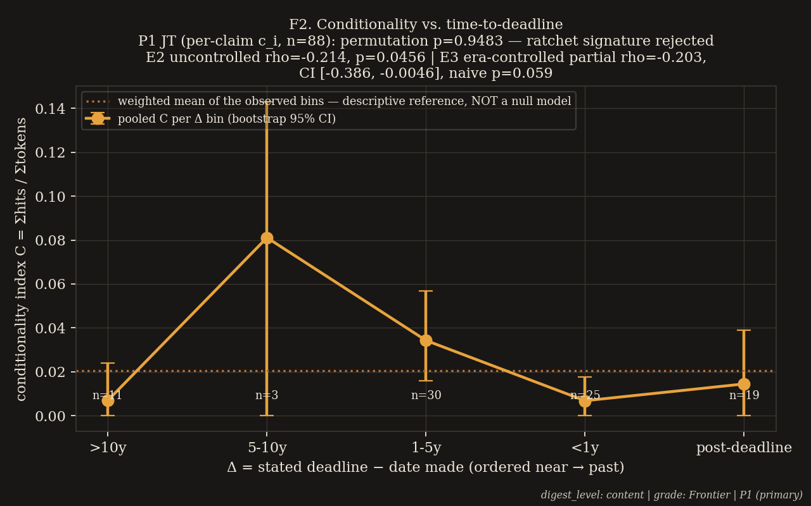
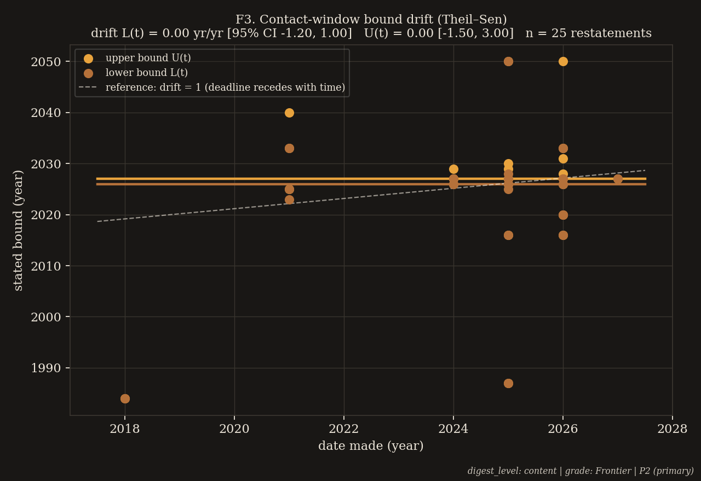
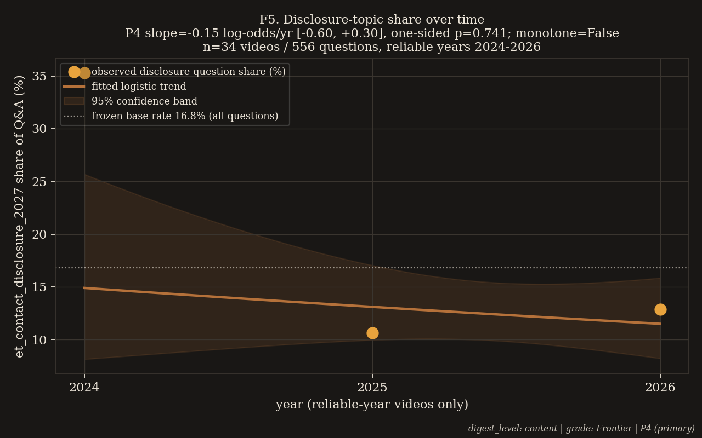
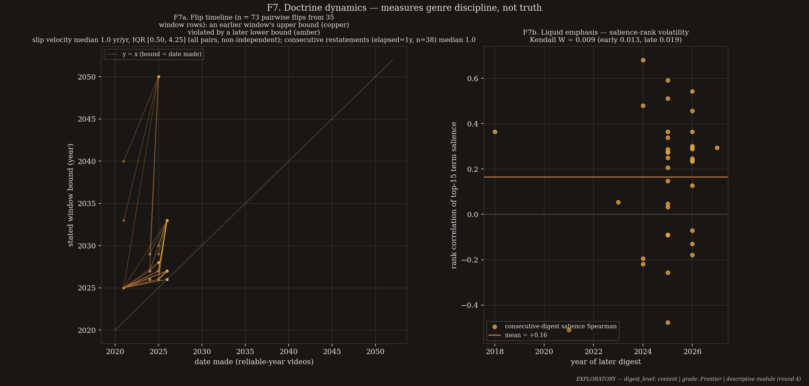
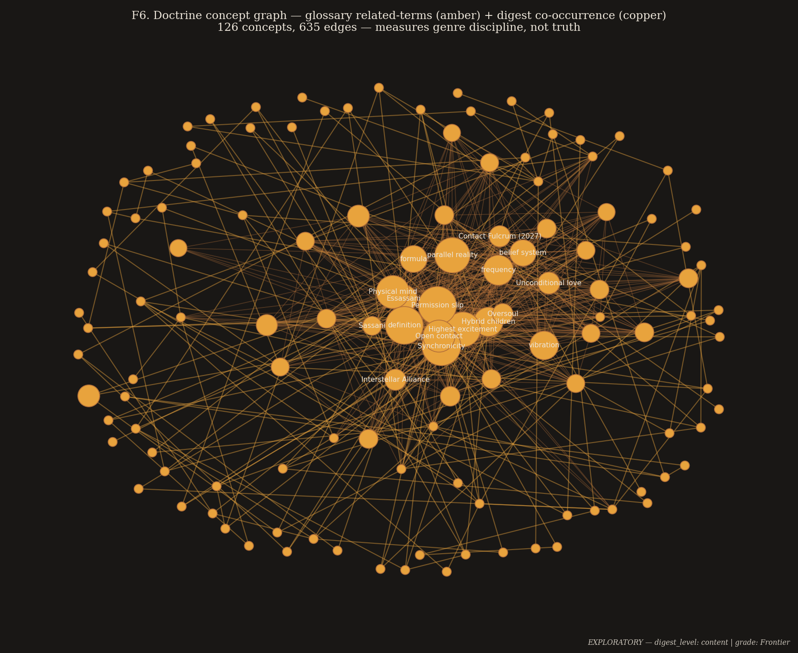
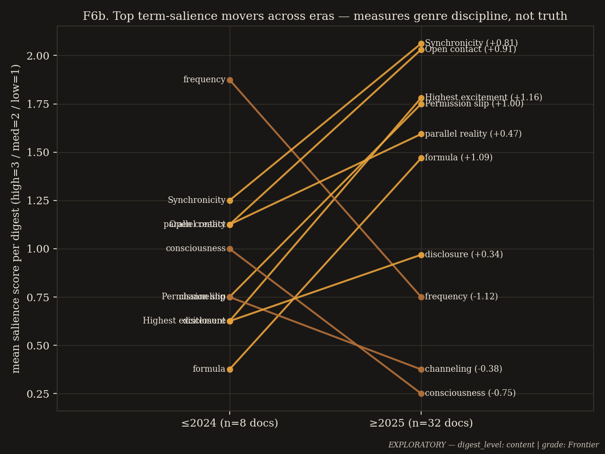
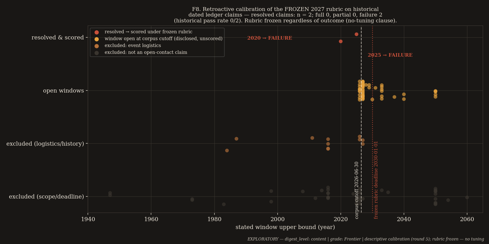

Folio X · An evidence-honest anatomy of a self-sealing belief system. A modern channeled-prophecy corpus instrumented end to end: what it sells, what it promises, how its promises move, and what it would take to falsify them.
Seed 42 · Four pre-registered tests · One confirmation, three nulls — displayed, not buried
This archive never adjudicates the ontology claim— whether “Bashar” exists is not measurable here, and is not measured. What is measured is the corpus. The panel’s standing banner, binding on every doctrinal and predictive statement on this page: this work measures genre discipline, not truth.
Folio X · The Channeled Corpus
The previous folio built a laboratory for sound. This one turns the same machinery on a living belief system. Its subject is the Bashar Index — a public web archive documenting the teachings of “Bashar,” an entity channeled by Darryl Anka since 1983, and one of the most influential bodies of material in the contemporary contactee/disclosure subculture. It is unusual among such corpora in one decisive way: it makes dated claims.
An expert panel — a coder-expert and an advisor-skeptic who twice re-ran the code independently — audited the corpus across five rounds against a frozen snapshot (git HEAD cff3988). Exactly four pre-registered primary tests, Holm-corrected as a family at α = 0.05; everything else shipped badged EXPLORATORY. The reporting layer refuses to serialize an unbadged p-value or a test without an effect size and confidence interval — enforcement is a build error, not a convention. Every number on this page is quoted from a committed result JSON, including the nulls.
The doctrine is a compact metaphysics — five laws, parallel realities, “permission slips,” vibrational frequency — wrapped around a single escalating promise: that humanity is approaching open contact, currently promised for the late 2020s. The corpus also teaches that its own predictions are “readings of current energy,” not fixed futures — a built-in epistemic escape hatch. The panel’s question was whether that hatch is used systematically, and whether the system around it can be described honestly without ever adjudicating the prophecy itself. It can. This page is the anatomy.
The Panel in Five Lines
Round 1 — the program set: a Holm family of four primary tests, the quietism clause, and honesty machinery that makes unbadged claims a build error. record →
Round 2 — the design frozen at commit cff3988 under advisor amendments: absolute freeze hash, the stated-n rule, a CI-based drift test, the tightened partial criterion, the 50-phrase escape-hatch lexicon locked. record →
Round 3 — the pipeline built; the advisor’s independent audit found four discrepancies and one conflation that had upgraded an uncontrolled p into a headline. record →
Round 4 — every discrepancy fixed and reproduced digit-for-digit; the doctrine-dynamics module added; one new overprecision — a degenerate [1.0, 1.0] confidence interval — caught and scheduled for surgery. record →
Round 5 — surgery applied, everything re-run clean at seed 42; the final audit returned NOT CERTIFIED on five blockers; all five fixed and re-verified against the artifacts: CERTIFIED. record →
The standing instruction, verbatim from the final report: no statistic that is not serialized in the evidence layer with its provenance block; no figure carrying a p-value in its title except with its badge.
The Panel Record · Five Rounds, Two Loops Each
What each round settled
Round 1 — The Program
The panel framed the corpus as an object of measurement, not a claim to adjudicate: a Holm family of four primary tests (P1 conditionality ratchet, P2 window drift, P3 demand segmentation, P4 disclosure trend), every other statistic badged EXPLORATORY, grades attached per artifact (Frontier for digest-level, Speculative for transcript-level), and the quietism banner made standing law. Loop 2 set the enforcement rule that defines everything after: the reporting layer must refuse to serialize a p-value without its badge, effect size, and interval.
Round 2 — The Freeze
Design, lexicon, and rubric frozen under advisor amendments, pinned to an absolute freeze hash (cff3988): the 50-phrase escape-hatch lexicon (“probable,” “window,” “up to you,” “subject to change,” …) locked before the first scoring run; the stated-n rule (n declared before interpretation; below n = 10, directional + CI only — the ledger is the finding, the statistic is the annotation); P2 made CI-based rather than a p-value test; the 2027 rubric’s partial criterion tightened (explicit non-human-origin language, not “unknown”; instrument classes, not cameras).
Round 3 — The Audit Finds Four Discrepancies
The pipeline implemented; the advisor re-ran it independently and found: a doubled exclusion count (76 reported vs. the true 38 title-year-only rows); a silently swallowed exception that had dropped the E5 question-level cross-check entirely; a provenance block listing files the module never read; and a residual-direction sentence that contradicted its own figure (F4). Plus the E2/E3 conflation: an uncontrolled Spearman p = 0.0456 had been upgraded into a headline where only the era-controlled partial correlation was licensed. All five became named defect classes.
Round 4 — Every Fix Reproduced; One New Overprecision Caught
All four discrepancies fixed — verifiably: the advisor re-ran the modules and reproduced every digit. The doctrine-dynamics module added (“how a canon drifts while claiming immutability”), and the audit caught one new defect of the panel’s own making: a bootstrap CI of [1.0, 1.0] on the median slip velocity — a degenerate artifact of resampling dependent all-pairs ratios, the discrete median collapsing the interval to zero width. Mandatory surgery scheduled; goal v3 adopted: the best-documented honest account of a modern channeled-prophecy corpus, every null at the same prominence as every hit, and the frozen 2027 rubric standing as a public, timestamped, blind-scored falsification pledge.
Round 5 — Surgery, Calibration, and the Certification Arc
Loop 1 applied the surgery (the [1.0, 1.0] CI removed, its corpse serialized in the JSON as removed_degenerate_ci), re-ran everything clean at seed 42, and added the retroactive rubric calibration under the binding no-tuning clause. Loop 2, the final audit: NOT CERTIFIED — five blockers: B1, a provenance block in the doctrine module repeating the round-3 sin (one input listed that was never read, two read unlisted); B2, a “248-term glossary” that exists nowhere in the evidence layer (104 terms; 248 is the related-edge count); B3, P4 — a pre-registered null — invisible in the report; B4, a “verbatim” rubric quotation that was abridged; B5, a folio plate that inverted the Peres et al. 2012 finding and invented a control group. All five were one-line fixes; loop 3 re-verified each against the artifacts, not the changelog, cross-checking B5 against the primary source. CERTIFIED. No primary result changed under any fix; the Holm family stands at exactly four tests, P3 alone significant.
Part I
The Corpus
The Bashar Index is not a transcript archive. It is an index, measurement, and critical-apparatus layer over the public Bashar corpus — with careful legal hygiene: no transcripts hosted, quotes capped at 30 words, diagrams redrawn, disclaimers everywhere. The panel worked over its machine-readable layer, and only that layer. A short history orients the numbers: Anka began channeling in 1983 after a guided-meditation class, following two close-range UFO sightings in the 1970s; through the 1990s the movement was a seminar-and-cassette operation; the 2016 documentary First Contact and the migration to YouTube transformed it into a streaming catalog — and it is this streaming era, 2016 to mid-2026, that the digest layer captures.
644 live sessions, 14 conference, 10 other, 7 workshop, 5 retreat, 4 online; sources archive.org (393) and tv.bashar.org (274); 6 entries are future events. Title/date metadata only — no content: era-level content claims before 2024 rest on the thin, fan-summarized teachings file, not on primary text.
2
Digest layer — 75 video digests
Structured per-video summaries with topic shares, key terms, and extracted predictions: 27 full sessions, 21 interviews with Anka, 12 official highlight clips, 15 clips — ≈ 1.19 M words analyzed (approx_words_analyzed: 1186510). The layer every primary test runs on.
3
Audience questions — 949 Q&As in 20 topic tags
Available only as aggregate counts plus 99 sampled examples; per-question tags are not stored, so P3/P4 are digest-level claims about estimated share vectors — disclosed as a data deviation, worked around, never hidden.
4
Glossary — 104 terms, 248 related-term edges
The doctrine’s controlled vocabulary. (The round-5 blocker B2 lives here: an early draft said “248-term glossary” — 248 is the related-edge count. The corrected sentence is this one.) The full concept graph: 126 nodes, 635 edges.
5
Prediction ledger — 164 dated claims
Built from the digests’ predictions_and_dates fields: each row carries its stated deadline or window, a conditionality score against the frozen 50-phrase escape-hatch lexicon, and a date-reliability flag. 38 rows come from videos whose year survives only in the upload title — kept, flagged, excluded from every time series.
Plate XXXVII — The Pipeline, as One Plate.Public videos become digests, digests become ledgers and share-vectors, and a single enforcement gate — the multiple-comparison enforcer — decides what may call itself a finding. Overlay counts, verbatim from the JSONs: 75 digests → 164 ledger rows · 949 questions · 20 tags; P1–P4 Holm family (α = 0.05), everything else EXPLORATORY; results/*.json + figures F1–F8, seed 42. digest_level: content | grade: Frontier.
The digest-bias caveat, stated before any finding
The digests are pipeline-generated summaries, not transcripts. Every primary number on this page is therefore a digest-level statement about estimated share vectors and extracted prediction fields — grade Frontier, never transcript-level. Two properties nonetheless make the corpus worth studying. It is modern: most reliable-date material is 2016–2026, dense with a specific, repeated, datable prophecy. And it is self-documenting: the doctrine explicitly teaches that predictions are readings of current energy — the escape hatch is part of the doctrine, so its usage can be counted in the doctrine’s own ledger. What the digest layer cannot see at all — transcription error, vocal register, authorship — is exactly what Part VI marks as blocked rather than papered over.
Part II
The Four Pre-Registered Tests
Exactly four primary tests, frozen before scoring and Holm-corrected as a family at α = 0.05. One confirmed; three nulls. The nulls hang at the same size, in the same daylight, as the confirmation — a pre-registered null is a result, not an omission (the round-5 audit enforced this on the panel’s own report; this page is built to that standard). Instrument panels quote the committed JSONs verbatim.
The family’s one confirmed test — about packaging, not prophecy
Do the formats in which the material is sold — free interviews, short clips, official highlight reels, paid full-length sessions — deliver systematically different content? Yes. The χ² test of topic-share × content-type over the 75 videos gives Cramér’s V = 0.212, clearing the pre-registered V > 0.2 threshold narrowly — the bias-corrected estimate, 0.206, sits below the bar — while the cluster-bootstrap 95% CI [0.211, 0.300] clears it entirely, and a within-year permutation test (p = 10-4) is robust to the pseudo-replication that makes the asymptotic p-value (≈10-175) meaningless as count inference. The direction is the content: free interviews (+6.9) and clips/excerpts (+3.1) over-deliver disclosure content relative to the corpus average; official highlight clips (−3.0) and paid full sessions (−6.4) under-deliver it, skewing to relationships, health, abundance, and life guidance. The front door sells contact; the back room sells life advice. Disclosure as marketing surface, personal guidance as product — the movement’s economic engine, measurable from public data alone.
Preregistration — design & deviations
Hypothesis
H4 segmentation: topic shares differ by packaging format — confirmed only if p < 0.05 AND V > 0.2 (design threshold, frozen round 2).
Endpoint + threshold
χ² on the 20-tag × 4-type table of summed per-video topic-share points; Cramér’s V against 0.2; cluster-bootstrap CI over videos; within-year-strata permutation as the pseudo-replication-robust p.
Null
No segmentation: packaging carries the same topical mix.
Data deviation (disclosed)
Per-question tags keyed to video are not stored in the repo; P3 runs on per-video 20-tag share vectors. All cells are pipeline-estimated share points, not raw question counts — hence the headline asymptotic p is decorative and caged.
Cross-check
E5 (EXPLORATORY): the 99 sampled questions, Monte-Carlo permutation p = 0.031, V = 0.558 [0.555, 0.772] — direction confirmed at question level within the two sampled formats; the confirmed claim remains digest-level.
Kill
V below threshold or CI covering it → segmentation claim does not ship. (Not triggered.)

F4 · The Heatmap.Tag × content-type standardized Pearson residuals. The disclosure row reads: full sessions −6.4, interviews +6.9, clips +3.1, official highlights −3.0. (The round-3 sentence claiming highlights skew to disclosure contradicted this figure and was retracted — the skew is carried by interviews and clips.) digest_level: content | grade: Frontier | P3 (primary).
χ² test of independence, 20-tag × 4-type table — observed chi2=1012.009015333832, dof=57, n_percentage_points=7505, target p < 0.05 AND V > 0.2PASSCramér’s V vs pre-registered threshold 0.2 — observed V=0.21200993605007945; bias_corrected_v=0.2059931898671588, target V > 0.2 (cleared narrowly; bias-corrected estimate below the bar)PASSCluster-bootstrap 95% CI over videos — observed [0.21070200784255194, 0.3002126087826097], target clears the 0.2 threshold entirelyPASSWithin-year-strata permutation (reliable-year videos, n=40) — observed chi2=572.1, permutation p=0.0001, asymptotic p=4.042e-86, V=0.218, target robust to row-independence problemPASSHeadline asymptotic p — observed 7.496757064537865e-175, target DECORATIVE as count inference — massive pseudo-replication; never quoted without this caveat (advisor ruling §3)CAGED
The instrument says:“The operative evidence is: V=0.212 clears the pre-registered 0.2 threshold narrowly (bias-corrected 0.206 does not), the cluster bootstrap CI clears it entirely, and the within-year-strata permutation p=0.0001 is robust to the row-independence problem. P3 confirms digest-level topical segmentation by packaging format, NOT question-level demand.”
Adjudication note — always visibleThe confirmed claim is digest-level segmentation by packaging format. The 99-question cross-check (E5) is EXPLORATORY and inherits its own pseudo-replication caveat; the 10-175 asymptotic figure is retained only as a decorative artifact and is never quoted without its caveat.
The ratchet as a hedging mechanism — the signature is not there
The pre-registered ratchet hypothesis held that as a stated deadline approaches, claims about it become more conditional — hedging as an approach-avoidance mechanism, quantified by a conditionality index C (lexicon hits per token) against Δ, the time remaining to the deadline. The one-sided Jonckheere–Terpstra permutation test across ordinal Δ bins rejects it: p = 0.948, Somers’ D = −0.309 — conditionality is flat-to-falling near resolution, the direction the pre-registration assigned to unhedged forecasting. Two companion statistics are kept distinct (the round-3 conflation was corrected in the audit): the uncontrolled Spearman ρ = −0.214 (EXPLORATORY p = 0.046) does not control for era; the era-controlled partial ρ = −0.203 has a bootstrap CI [−0.386, −0.005] that grazes zero (naive asymptotic p ≈ 0.059, reported, never upgraded). The negative trend is weak, era-fragile, and carried by a three-claim bin. A rejected H1 is a null for the ratchet hypothesis — it is not a discovered virtue, and no sentence of the form “the corpus hedges honestly” is licensed anywhere in the panel’s output.
Preregistration — design & the stated-n rule
Hypothesis
Conditionality C rises monotonically as Δ shrinks (the ratchet-as-hedging signature).
Endpoint + threshold
One-sided Jonckheere–Terpstra across ordinal Δ bins on per-claim c_i; permutation p, 10,000 resamples, seed 42.
Null
Flat or falling conditionality near resolution — the shape the pre-registration assigned to honest forecasting. Observed: exactly that shape, which is a null for H1, not a confirmation of honesty.
Stated n
88 reliably dated claims with parseable deadlines. Per-bin: >10y n=11 (pooled C 0.0070); 5–10y n=3 (C 0.0811 — the bin that carries the trend); 1–5y n=30 (C 0.0343); <1y n=25 (C 0.0068); post-deadline n=19 (C 0.0145). Where n < 10: directional + CI only.
Era control
E1 (within-era JT) is vacuous — every reliable-date claim is already post-2015; the operative era control is E3, the partial Spearman controlling date_made.
Kill
A rejected H1 ends the question. Mining P1 further was explicitly abandoned in round 4: the ratchet question is answered; continuing would be necromancy.

F2 · Conditionality vs. Time-to-Deadline.P1 JT (per-claim c_i, n=88): permutation p=0.9483 — ratchet signature rejected. E2 uncontrolled ρ=−0.214, p=0.0456 | E3 era-controlled partial ρ=−0.203, CI [−0.386, −0.0046], naive p=0.059. The elevated 5–10y bin is n=3; pooled C per bin is descriptive only. digest_level: content | grade: Frontier | P1 (primary).
P1 one-sided Jonckheere–Terpstra permutation p — observed 0.9483051694830517 (J=1285.0), target ratchet signature: rising C near deadlineNULL — H1 REJECTEDP1 effect size — Somers’ D — observed -0.3094736842105263, CI95 [-0.6345094456701599, 0.053471835565435055]NULLP1 n, stated before interpretation — observed 88 reliably dated claims with parseable deadlines, target stated-n rule (advisor ruling b)PASSE2 uncontrolled Spearman (EXPLORATORY) — observed rho=-0.21367676431185825, p=0.0456131236415718, n=88, target does NOT control era — never the headline (r3 audit)EXPLORATORYE3 era-controlled partial Spearman (EXPLORATORY) — observed partial rho=-0.20308494058626841, bootstrap CI95 [-0.38583704164110927, -0.0045597707100553065], naive p=0.0592, target upper bound grazes zero; naive asymptotic p reported, never upgradedEXPLORATORY
The instrument says:“Ratchet signature REJECTED (p=0.9483, Somers D=-0.309); the observed direction is flat-to-falling, consistent with the pre-registered null shape. The negative trend is weak, era-fragile, and carried by the 5-10y bin (n=3). A rejected H1 is a null result for the ratchet hypothesis, NOT a confirmed alternative (advisor ruling §2).”
Null — displayed, not buriedP1 is a clean pre-registered rejection. No “honest forecasting” sentence is licensed; the uncontrolled p = 0.0456 may not be quoted as the headline. (Both rules were enforced on the panel’s own drafts.)
The ratchet as a calendar mechanism — the CI does not certify it either
P2 asked the drift question directly: does the contact window’s stated bound recede at least as fast as time passes? The Theil–Sen slope of the window’s lower bound over restatements (n = 25) is 0.0 with a 95% CI of [−1.2, 1.0] — which does not certify recession at ≥ 1 year per year. By design (round 2) P2 is CI-based and enters the Holm family with its CI verdict rather than a p-value. The drift the ledger plainly documents — Part III — is real as a sequence of events; what the inferential machinery refuses to certify is a clean per-year rate over deduplicated restatements. Both facts ship. The ledger is the finding; the statistic is the annotation.
Preregistration — design & thresholds
Hypothesis
The contact window’s lower bound drifts at ≥ 1.0 year per year — the deadline recedes at least as fast as time passes (ratchet signature).
Endpoint + threshold
Theil–Sen slope over restated contact-window bounds, deduplicated per video/bounds; CI-based per design §2 — no p-value by construction.
Null
CI does not certify drift ≥ 1.0. Observed: exactly that.
Stated n
n = 25 restated contact-window bounds; each point a restatement in a reliable-date video.
Kill
CI verdict is final for the inferential claim; the documented slip chain itself is reported as ledger fact in Part III with its non-independence disclosed.
F1 · The Sliding-Window Gantt.Every stated contact window vs. the moving “now” — n = 25 distinct stated windows, deduplicated per video. The bars migrate rightward as the calendar catches them; the dashed line is the present. digest_level: content | grade: Frontier.

F3 · The Drift That Is Not Certified.Theil–Sen drift of stated bounds over restatements: L(t) = 0.00 yr/yr [95% CI −1.20, 1.00]; U(t) = 0.00 [−1.50, 3.00]; n = 25. The dashed reference is drift = 1 — the line the data never certify. digest_level: content | grade: Frontier | P2 (primary).
predictions · P2 · commit cff3988 · seed 42 · CI-based, no p by design
P2 Theil–Sen drift slopes (lower / upper bound) — observed L=0.0, U=0.0, target drift >= 1.0 yr/yr certifies the ratchetNULL — NOT CERTIFIEDP2 confidence intervals — observed ci95=[-1.2, 1.0]; slope_U 95% CI [-1.50, 3.00], target CI verdict, per design §2NULLP2 n, stated before interpretation — observed 25 restated contact-window bounds, target deduplicated per video/bounds; reliable-date videos onlyPASS
The instrument says:“CI does not certify drift >= 1.0. Each point is a restatement of a contact window in a reliable-date video (deduplicated per video/bounds).”
Null — displayed, not buriedThe inferential rate is not certified; the documented slip chain is nonetheless a ledger fact — see Part III, where the velocity ships with its IQR and its non-independence disclosed.
The audience’s disclosure appetite is flat while the windows slide
The family’s fourth primary asked whether disclosure content is escalating: does the disclosure-topic share of audience questions rise over the late streaming era, against the frozen 16.8% base rate? No. The binomial GLM of disclosure-question share on year over the reliable-year videos of 2024–2026 (n = 34 videos, 556 questions) gives a log-odds slope of −0.149 per year (95% CI [−0.60, +0.30], one-sided p = 0.741 for a rising slope), and the fitted shares are non-monotone: the disclosure share is flat-to-declining against its frozen base rate. A clean pre-registered null — the corpus does not escalate its disclosure content in the era closest to the deadline — reported here with the same prominence as the family’s one confirmed test. (Equal prominence for this null was round-5 blocker B3: the panel’s own first draft had omitted it.)
Preregistration — design & thresholds
Hypothesis
Disclosure-topic share rises as the deadline approaches.
Endpoint + threshold
Binomial GLM of share on year; confirmation requires one-sided slope > 0 AND monotone fitted shares. Frozen base rate 16.8%.
Null → the escalation narrative is discarded for the late streaming era; reported at equal prominence with P3.

F5 · The Trend That Isn’t.Disclosure-topic share over time: P4 slope = −0.15 log-odds/yr [−0.60, +0.30], one-sided p = 0.741, monotone=False; n = 34 videos / 556 questions, reliable years 2024–2026; the dotted line is the frozen 16.8% base rate. digest_level: content | grade: Frontier | P4 (primary).
demand · P4 · commit cff3988 · seed 42
P4 binomial GLM slope (log-odds per year) — observed -0.14923458876642834 (se 0.23082827873133024, z=-0.6465177905698812), target one-sided slope > 0 AND monotone fitted sharesNULL — NO ESCALATIONP4 one-sided p / CI95 — observed p=0.7410279603184489; ci95=[-0.6016580150798356, 0.3031888375469789], target rising-slope testNULLP4 n, stated before interpretation — observed 34 videos / 556 questions, reliable years 2024-2026; monotone_fitted_shares=false; base_rate_frozen=16.8, target stated-n rulePASS
The instrument says:“Binomial GLM of disclosure-topic share on year, reliable-year videos 2024-2026 (n=34 videos, 556 questions). One-sided slope>0 plus monotone fitted shares: monotone=False; confirmed=False. Frozen base rate: 16.8%.”
Null — displayed, not buriedWith P1, P2, and P4 all null, the Holm family stands at exactly one significant test in four. The audience is not being escalation-fed; the windows slide anyway.
P3 demand segmentation — observed p_holm_global=2.2490271193613594e-174, target Holm step-down, family α=0.05SIGNIFICANTP1 conditionality ratchet — observed p_holm_global=1.0, target —NOT SIGNIFICANTP4 disclosure trend — observed p_holm_global=1.0, target —NOT SIGNIFICANTP2 window drift — observed CI verdict: does not certify drift >= 1.0, target enters CI-based, per design §2NOT CERTIFIED
The instrument says:“Holm step-down across the 4 primary tests; P2 is CI-based and enters with its CI verdict (design §2).” Exactly one significant test in four: P3. (The global multiplier of 3 on P3’s p reflects three p-values plus P2’s CI verdict — internally consistent and disclosed in the policy line.)
seed 42 · source: analysis/results/family_holm.json · policy: Holm step-down across the 4 primary tests at α=0.05
Part III
The Ratchet Anatomy
P1 and P2 rejected the ratchet as an inferential mechanism — no rising hedges, no certified drift rate. But the ledger itself — the finding, with the statistics as annotation — tells the cleaner story.
The documented slip chain
The contact window’s documented slip chain runs 2020 → 2023–33 → 2025–33 → 2026/27 → 2028–29, each re-issue logged as a ratchet event — never edited, only appended. Across the corpus there are 73 window-polarity flips — a later-stated window lying entirely beyond an earlier-stated one — computed as all-pairs ratios from 35 window rows and therefore non-independent (each row enters ~4 pairs; this structure is disclosed wherever n = 73 appears). The median flip overshoots the violated bound by 2 years (95% CI [1.0, 2.0]; max overshoot 25 years). By era pair: 37 flips run early→late, 33 late→late, 3 early→early.
The ratchet fails as a hedging mechanism and succeeds as a calendar mechanism: deadlines do not become more conditional as they approach — they are simply replaced, annually, on schedule. The failure mode is institutionalized, not improvised.
Plate XXXIII — The Receding-Deadline Ratchet.Each promised window is replaced, on schedule, by a later one. Overlay, verbatim from the JSONs: slip chain 2020 → 2023–33 → 2025–33 → 2026/27 → 2028–29; 73 window-polarity flips (all-pairs ratios from 35 window rows, non-independent); consecutive restatements recede at median 1.0 yr/yr (IQR [0.5, 4.25] on the all-pairs distribution). The ledger — 164 dated claims — is the finding; the statistics are annotation. digest_level: content | grade: Frontier; the E7 statistics carry the EXPLORATORY banner, mirroring figure twin F7a.

F7 · Doctrine Dynamics — Flip Timeline and Liquid Emphasis.F7a: the 73 pairwise flips (all pairs, non-independent); consecutive restatements (elapsed = 1 y, n = 38) recede at median 1.0 yr/yr; all-pairs median 1.0 yr/yr, IQR [0.50, 4.25]. F7b: consecutive-digest salience Spearman, mean +0.16 — the emphasis churn quantified. EXPLORATORY — digest_level: content | grade: Frontier | measures genre discipline, not truth.
E7 · The slip velocity, with its IQR EXPLORATORY
The headline velocity ships only with its dispersion, by round-5 law: the median pairwise slip velocity is 1.0 year per year with IQR [0.5, 4.25] — only 29% of flips sit at exactly 1.0, with 38% below and 33% above and a tail of 5–24 yr/yr jumps. The clean form is the consecutive-restatement subset: pairs of restatements one year apart (n = 38) recede at median 1.0 yr/yr (IQR [1.0, 6.0]; 55% at exactly 1.0), while pairs three or more years apart (n = 32) recede at median 0.4 yr/yr (IQR [0.4, 0.5]). The round-4 bootstrap CI of [1.0, 1.0] has been removed as a degenerate artifact — resampling dependent ratios made the discrete median’s interval collapse to zero width; the corpse is serialized in the JSON as removed_degenerate_ci.
doctrine_dynamics · E7-window-polarity-flip-dynamics · commit cff3988 · seed 42 · descriptive, no p-value by design
Flip census — observed n_flips=73 from n_window_rows=35, NON-INDEPENDENT (all-pairs structure; each row enters ~4 pairs), target descriptive ledger fact, not inferenceEXPLORATORYMedian overshoot of the violated bound — observed 2.0 years, ci95=[1.0, 2.0]; max 25.0, target —EXPLORATORYMedian slip velocity, all pairs — observed 1.00 yr/yr, IQR [0.50, 4.25]; shares at/below/above 1.0 = 29/38/33%; tail 5–24 yr/yr, target ships only with its IQR (r4/r5 ruling)EXPLORATORYHEADLINE — consecutive-restatement subset (elapsed = 1 y) — observed n=38, median 1.00 yr/yr, IQR [1.0, 6.0], 55% at exactly 1.0, target clean form mandated by r4 advisorEXPLORATORYCompanion subset — elapsed >= 3 y — observed n=32, median 0.40 yr/yr, IQR [0.4, 0.5], target —EXPLORATORYremoved_degenerate_ci — observed [1.0, 1.0] — REMOVED, target degenerate bootstrap artifact over dependent ratios; not an uncertainty statementCORPSE ON DISPLAY
The instrument says:“Median slip velocity 1.00 yr/yr with IQR [0.50, 4.25] — only 29% of flips sit at exactly 1.0. HEADLINE (clean form): consecutive restatements (elapsed = 1 y, n = 38) recede at median 1.00 yr/yr; pairs with elapsed >= 3 y (n = 32) recede at median 0.40 yr/yr. Descriptive ledger fact, not inference; no p-value by design.”
Disclosure — always visiblen = 73 is non-independent (all-pairs ratios from 35 rows); every use of it carries this sentence. The two headline subsets sum to 70 pairs, leaving three elapsed = 2 y pairs (velocities 3.0–3.5) recoverable from the JSON definitions.
Measures genre discipline, not truth— the quietism banner, binding on every doctrinal statement below: consistency is descriptive corpus science, not evidence about origin.
A fixed vocabulary with liquid emphasis
The doctrinal network — 126 nodes, 635 edges over the 104-term glossary (248 related-term edges plus 476 digest co-occurrence edges; density 0.081; a single connected component) — is stable in vocabulary but not in emphasis. Kendall’s W of within-digest term-salience ranks is 0.009 overall (95% CI [0.007, 0.014]) — 0.013 in the early era (n = 8), 0.019 in the late era (n = 32) — meaning salience ranks are essentially uncorrelated across digests. Between consecutive digests, the rank correlation of the top-15 terms averages just +0.16 and the top-5 turnover averages 47%. The doctrine claims immutability and delivers churn — but churn of emphasis, never of lexicon. The era movers tell the same story in words: “Highest excitement” (Δ +1.16), “formula” (+1.09), “Permission slip” (+1.00), “Open contact” (+0.91) rise late; “frequency” (Δ −1.13) and “consciousness” (−0.75) fade.
Plate XXXIV — The Doctrine as a Firmament.The stars never move, only their brightness. Overlay, verbatim from the JSONs: 126 nodes · 635 edges; Kendall W ≈ 0.009 — a fixed vocabulary with liquid emphasis; salience ranks uncorrelated across digests, and half the top-five terms turn over between consecutive digests. EXPLORATORY — descriptive | measures genre discipline, not truth.

F6 · The Concept Graph.Doctrine concept graph — glossary related-terms (amber) + digest co-occurrence (copper); 126 concepts, 635 edges, one component. “Measures genre discipline, not truth” is burned into the figure itself, as it is on every doctrine artifact. EXPLORATORY — digest_level: content | grade: Frontier.

F6b · The Era Movers.Salience deltas, early (n = 8 digests, ≤ 2024) vs late (n = 32, ≥ 2025): excitement, formula, permission slip, and open contact rise; frequency and consciousness fade. The lexicon never changes; the emphasis never holds still. EXPLORATORY — descriptive.
doctrine_graph · E6-kendall-W-term-rank-stability · commit cff3988 · seed 42 · descriptive, no p-value by design
E6 Kendall’s W (tie-corrected), top-15 terms across 75 digests — observed W=0.009167981784634712, ci95=[0.007374486931485871, 0.014102285275968414], target descriptive: low W = salience ranking varies by documentEXPLORATORYE8 W by era — observed overall 0.0092; early (<=2024, n=8) 0.0127; late (>=2025, n=32) 0.0186, target W ≈ 0 in every sliceEXPLORATORYE9 consecutive-digest volatility — observed 39 adjacent pairs (37 defined, 2 constant-vector excluded); mean spearman=0.1639; mean top5 turnover=0.4667, target high turnover + near-zero rank correlation = liquid emphasisEXPLORATORY
The instrument says:“W ≈ 0 in every slice: salience ranks are essentially uncorrelated across digests — the doctrine is a fixed vocabulary with liquid emphasis. Descriptive; no p-value by design.”
seed 42 · sources: analysis/results/doctrine_results.json + doctrine_dynamics_results.json · banner: measures genre discipline, not truth
The flagged contradictions EXPLORATORY
Four programmatic flags, disclosed in doctrine_results.json — bookkeeping of a canon that claims immutability:
The 4-vs-5 Laws arity conflict. The glossary lists “Four Laws of Creation” (the older/parallel form) and “Five Laws of Creation” (the stated immutable set) as separate entries; teachings.md cites the four-law form 4 times and the five-law form once, while digests cite the five-law form. Found in at least two late-era digests, with a third digest undated — all three flagged year-unreliable in the ledger.
The Shalanaya/Yahyel alias conflict. Digests cite “Yahyel” broadly (28 digests) while “Shalanaya/Shalinaya” survives in teachings.md (6 mentions vs 11) and the glossary — which records them as one race while noting fan sources that split them. The corpus’s first-contact race carries two names and an unresolved identity.
73 window-polarity flips — the Part-III census, double-flagged here because each flip is also a doctrinal event: the promised event moved past its own previously stated deadline.
77 asymmetric related-term pairs — glossary edges not reciprocated by the glossary itself (Bashar→Essassani, Shalanaya→Yahyel among them): bookkeeping-level inconsistency, flagged, never smoothed over.
All doctrine outputs carry the quietism banner; advisor ruling 2b is binding on this section: consistency is descriptive corpus science, not evidence about origin — no origin-language appears in these outputs.
Because the corpus makes a datable prediction, the panel pre-registered its falsification instrument before the outcome window. The rubric is frozen — timestamped at cff3988 — and quoted here in full. (Round-5 blocker B4 was an abridged quotation of this text labeled “verbatim”; the text below is the whole instrument.)
The Frozen Rubric — Verbatim, Timestamped cff3988
Claim under test: “open contact” within the window currently stated as 2027 (in-corpus slips logged as ratchet events, never edits to the rubric). Scored blind to timing against the public record by a coder blind to the panel’s drift results; only events after pre-registration count; retrospective re-interpretation never scores.
Success (full): a national government or the UN formally confirms non-human intelligence and initiates a public diplomatic/communication exchange, OR a non-human craft/entity is publicly presented and independently verified by ≥2 major scientific institutions, before 2030-01-01.
Partial (tightened): an official government statement using explicit non-human-origin language (not “unknown”) about materials or craft, verified by a national laboratory or peer-reviewed analysis; or a mass-witnessed (≥1,000 independent witnesses), multi-instrument (≥2 independent instrument classes, e.g. radar + optical — not two cameras) event officially unresolved and endorsed as anomalous by ≥2 national space/defense agencies.
Failure: neither criterion met by 2030-01-01.
Plate XXXVI — The Scorecard, Sealed Before the Window.Overlay (abridged summaries — the full verbatim text is on this page, § The Frozen Rubric): FULL — government/UN confirms NHI + public exchange, or verified craft by ≥2 scientific institutions, before 2030-01-01 · PARTIAL — explicit non-human-origin statement, lab/peer-reviewed verified; or mass-witnessed multi-instrument event endorsed by ≥2 agencies · FAILURE — neither by 2030-01-01 · retroactive calibration baseline: historical pass rate 0/2 — rubric frozen regardless of outcome (no-tuning clause). Pre-registered | rubric frozen — no tuning; EXPLORATORY calibration twin F8 carries its own badge.
The retroactive calibration — stress-tested before it matters EXPLORATORY
Round 5 applied the frozen rubric, unchanged, to the ledger’s historical dated claims under a pre-specified protocol: a deterministic eligibility screen, then blind-ish scoring in which claim text sets only the deadline while the outcome is looked up from a frozen public-record fact table. Of 164 ledger rows, 2 resolved open-contact claims were scorable — the 2020 window start (“original contact window start mentioned; later narrowed to 2027”) and the 2025 “early markers” claim — and both score failure: historical pass rate 0/2, Clopper–Pearson 95% [0.000, 0.842] — descriptive annotation only; ledger rows are doctrinally correlated, no independence claimed. Fifty-five open-window claims (including every 2026/27 claim) are disclosed as not yet scorable, and the 2016 cluster — documentary premieres and “everything will change” rhetoric — passes through the screen and is excluded with reasons (13 rows: 5 event logistics, 8 not-open-contact).
The honest reading: the rubric has perfect historical specificity — no event in the public record has ever satisfied it — while its sensitivity is unknowable from a history containing no true positive. The thinness is the finding: the resolved cohort is small (n = 2) precisely because the doctrine keeps its windows open — itself a datum. The baseline for the 2027 watch is therefore this: a full or partial score at the deadline would be unprecedented against the corpus’s entire dated-claim history, and a failure continues the documented base rate.
rubric_calibration · E10-retroactive-rubric-calibration · commit cff3988 · corpus cutoff 2026-06-30 · deterministic; no stochastic steps
Resolved cohort, scored under the frozen rubric — observed n_ledger_rows=164; n_resolved_scored=2; score_tally={failure: 2}, target pre-specified screen S1–S5, blind-ish fact-table lookupEXPLORATORYHistorical pass rate (full + partial) — observed 0/2 = 0.0; Clopper–Pearson 95% [0.000, 0.842], ci95=[0.0, 0.841886116991581], target descriptive annotation only; doctrinal correlation, no independence claimedEXPLORATORYOpen windows disclosed, unscored — observed 55 (including every 2026/27 claim), target disclosed, never silently droppedEXPLORATORYScreen exclusions — observed event_logistics=8, no_deadline=13, not_contact=83, historical_reference=3; 2016 cluster: 13 rows (5 logistics / 8 not-contact), target scope discipline is part of what is calibratedEXPLORATORY
The instrument says:“The calibration establishes the rubric’s historical SPECIFICITY (no false positives on the past); sensitivity is UNKNOWABLE from history because no true open-contact event exists to detect. HARD NO-TUNING CLAUSE (r4 advisor constraint, binding): the frozen 2027 rubric may not be edited after this calibration is scored, whatever it shows — a rubric fitted to the past is worthless for 2027.”
No-tuning clause — bindingThe frozen 2027 rubric may not be edited after this calibration is scored, whatever it shows. The clause is embedded in the code, the results JSON, and the analysis README. A rubric that misclassifies the past is a finding about the rubric, published as such — never a license to tune.
The near-miss review — why specificity is perfect
The serialized review of the public record’s closest approaches, each failing the frozen criteria for a stated reason:
Event
Why it fails the frozen rubric
2017
NYT AATIP/ATI disclosure + Navy videos — language was “unknown/unidentified,” never explicit non-human-origin; no national-laboratory or peer-reviewed verification → fails tightened partial; no diplomatic exchange → fails full.
2021
ODNI UAP preliminary assessment — “unidentified,” officially unresolved but NOT endorsed as anomalous by ≥2 national space/defense agencies; no instrument-class-verified mass event → fails partial.
2022–23
US congressional UAP hearings (incl. Grusch testimony) — sworn testimony is not an official government statement of non-human origin; no national-lab or peer-reviewed verification of materials → fails partial.
2024
AARO Historical Record Report vol. 1 — affirmatively reports NO non-human-origin evidence, the opposite of the required explicit language → fails partial and full.
1952 / 1997
Historical mass-sighting waves (Washington; Phoenix) — no official endorsement as anomalous by ≥2 national space/defense agencies; no explicit non-human-origin statement → fail partial.

F8 · The Calibration, Mapped.Retroactive calibration of the frozen 2027 rubric on historical dated ledger claims: resolved claims n = 2 — full 0, partial 0, failure 2 (historical pass rate 0/2); rubric frozen regardless of outcome (no-tuning clause). The dashed line is the corpus cutoff, 2026-06-30; the open-window mass to its right is the 55-claim disclosure. EXPLORATORY — digest_level: content | grade: Frontier | descriptive calibration (round 5); rubric frozen — no tuning.
The one question that would bear most directly on the corpus’s central claim — is Bashar-era text stylistically distinguishable from Anka-era text? — requires real transcripts, and the panel’s build environment has no network egress. The acquisition pilot (acquisition.py) fails per-ID with logged timeouts, and no transcript text was fabricated. The blockage is serialized like any other result:
Planned targets — observed 75 (the full digested corpus), target pre-registered transcript listPLANNEDPilot attempts — observed 94agFEADfyk: timeout after 45s, target fetch via youtubetotranscript.comBLOCKEDTranscripts fetched — observed 0, target —BLOCKED
The instrument says:“network/egress blocked or source unreachable (first failure: 94agFEADfyk: timeout after 45s). No transcript text was fabricated. Where fetching failed, the failure is logged per-ID above. Stylometry (Q3) remains BLOCKED until real transcripts pass the WER audit.”
Plate XXXII — The Authorship Arm, Frozen Mid-Pipeline.Transcripts (BLOCKED — network egress) → function-word vectors → cross-entropy classifier, ΔCE per token. The snapped chain is drawn into the artwork itself: the classifier never runs because the transcripts never arrive. The protocol, WER gates, and power contingency ship as a registered report instead. Speculative | status: BLOCKED, registered-report fallback. No transcript was fabricated.
The registered report — the protocol is the deliverable
When the data cannot ship, the protocol ships, pre-committed so that no future result can be silently re-aimed:
The target list — the 75-video digested corpus, archived raw text + per-file metadata with a SHA-256 manifest.
The WER gates — 15% overall / 10% function-word word-error-rate ceilings on a 12-transcript stratified sample (4 interviews, 4 sessions, 4 archive.org), with a mandatory Whisper hallucination screen: low-audio-energy spans with high text output are flagged and excluded, because the model invents fluent text in low-signal regions. Disclosed in advance (advisor ruling e): on 1984–96 cassette audio these gates are optimistic; the pass-only-spans fallback induces era/audio-quality selection bias, and the era-extension arm may degrade to descriptive.
The 6+6 matched-pair pilot — whose empirical per-document ΔCE variance must replace the panel’s earlier asserted power statement before any stylometry claim runs. The ΔCE ≥ 0.15 nats/token figure is demoted to a target detectable effect, gated on that measured variance.
With egress, in order: run the acquisition for real; pull channel metadata (view/subscriber counts, upload cadence) to give the demand sociology the outcome variable it currently lacks; then fetch one external prophecy corpus to ask whether the 1.0 yr/yr slip velocity and liquid-emphasis signature are generic to the genre or specific to this doctrine.
The channeling-science context — precedent, not evidence
Channeling is not unstudied; the published record is thin, small-n, and honest about it. Two anchors, graded as external literature — not part of this corpus:
Peres, Moreira-Almeida, Newberg et al. 2012 (PLoS ONE 7(11):e49360) — the one published neuroimaging precedent for trance writing: ten Brazilian psychographic mediums (five experienced, five less expert), SPECT during psychography versus each medium’s own non-trance writing — a within-subject control, no separate control group. Experienced mediums showed decreased frontal rCBF (hypofrontality) during trance — in the left hippocampus, anterior cingulate, right superior temporal and precentral gyri — while producing text rated more complex than their control writing; the increased-activity pattern appeared only in the less-expert subgroup. A mundane candidate mechanism exists (automatized fluency plus reduced self-monitoring — the same frontal hypofrontality signature appears in jazz-improvisation studies). Grade: Frontier — real data, n = 10, unreplicated in thirteen years. (Round-5 blocker B5 was a folio plate that inverted this finding and invented a control group; the corrected caption is this paragraph.)
Wahbeh, Cannard, Okonsky & Delorme 2019 (IONS; F1000Research 8:67) — the most controlled physiological study of trance channeling to date: thirteen channelers, within-subject channeling/no-channeling blocks, EEG + ECG + GSR + respiration + voice. Result: voice parameters differed; no substantive differences in EEG frequency power, ECG, GSR, or respiration; self-rated trance depth moderate (47.7 ± 33.6 on 0–100). The honest headline: the state is subjectively vivid, vocally distinct, and physiologically near-invisible on standard measures. Grade: Frontier.
The context cuts both ways under the quietism banner: hypofrontality is not evidence of contact, and a physiological null is not evidence against the experience. What neither study does is measure a corpus’s promises — which is the instrument this folio adds.
Plate XXXV — The Psychography Study, as Precedent.Within-subject SPECT psychography design (Peres et al., 2012, external literature): the second desk in the background is the control — each medium’s own non-trance writing, not a separate group. Experienced mediums showed DECREASED frontal rCBF during psychography; the increase belonged to the less-expert subgroup. Panel status: external precedent only — not part of this corpus. Grade: Speculative (external-study depiction).
Every statistic on this page was re-run end-to-end at seed 42 in round 5 against the frozen repository snapshot (git HEAD cff3988), with 10,000 bootstrap and permutation resamples on every stochastic procedure. The machine-readable evidence layer — analysis/results/*.json, plus the downloadable 164-row ledger.csv — is the source of truth for every number quoted here, each serialized with its provenance block. Figures F1–F8 carry their badge, their n, and their digest-level inside the image itself; no figure carries a p-value in its title except with its badge.
What ships
analysis/results/predictions_results.json — P1/P2 + E1–E3, the slip chain
analysis/results/demand_results.json — P3/P4 + E4/E5, the residual directions
analysis/results/doctrine_results.json — graph, Kendall W, contradiction flags
analysis/results/doctrine_dynamics_results.json — E7–E9, the flip dynamics
analysis/results/rubric_results.json — E10, frozen rubric + calibration
analysis/results/acquisition_results.json — the blocked arm, logged honestly
analysis/results/family_holm.json — the family verdict
analysis/results/ledger.csv — 164 dated claims, downloadable
analysis/figures/fig_f1…f8.png — badged, on this page
What does not ship
The decorative 10-175 without its pseudo-replication caveat. Any “honest forecasting” sentence. Any unbadged exploratory claim. Any version of the slip-velocity headline without its IQR. Any “248-term glossary.” Any abridged quotation labeled verbatim. And no fabricated transcript, ever — the blocked arm stays blocked until real text passes the WER gates.
This folio measures genre discipline, not truth— nothing here speaks to the origin of the material, and no result is evidence for or against any claim about non-human intelligence. What is measured is how the promise behaves — and on that, the corpus has been remarkably forthcoming.
The prophecy’s deadlines fail on schedule, the packaging predicts the content, the vocabulary never changes while the emphasis never holds still — and the instrument that could settle the truth of it is frozen, published, and waiting for 2027.
The Bashar-Index Panel · Final Report §8 · the honest sentence